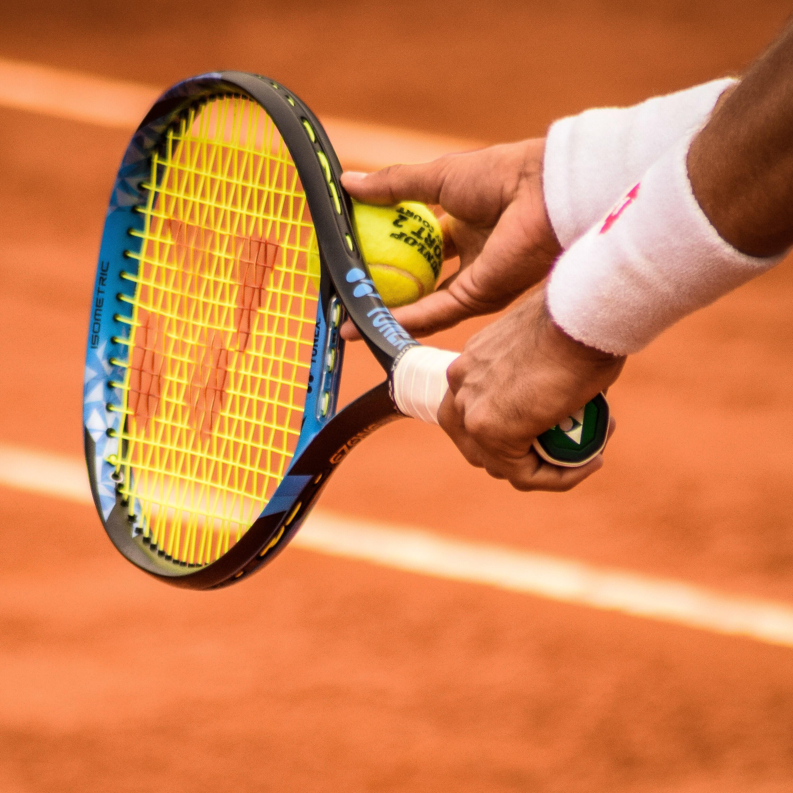
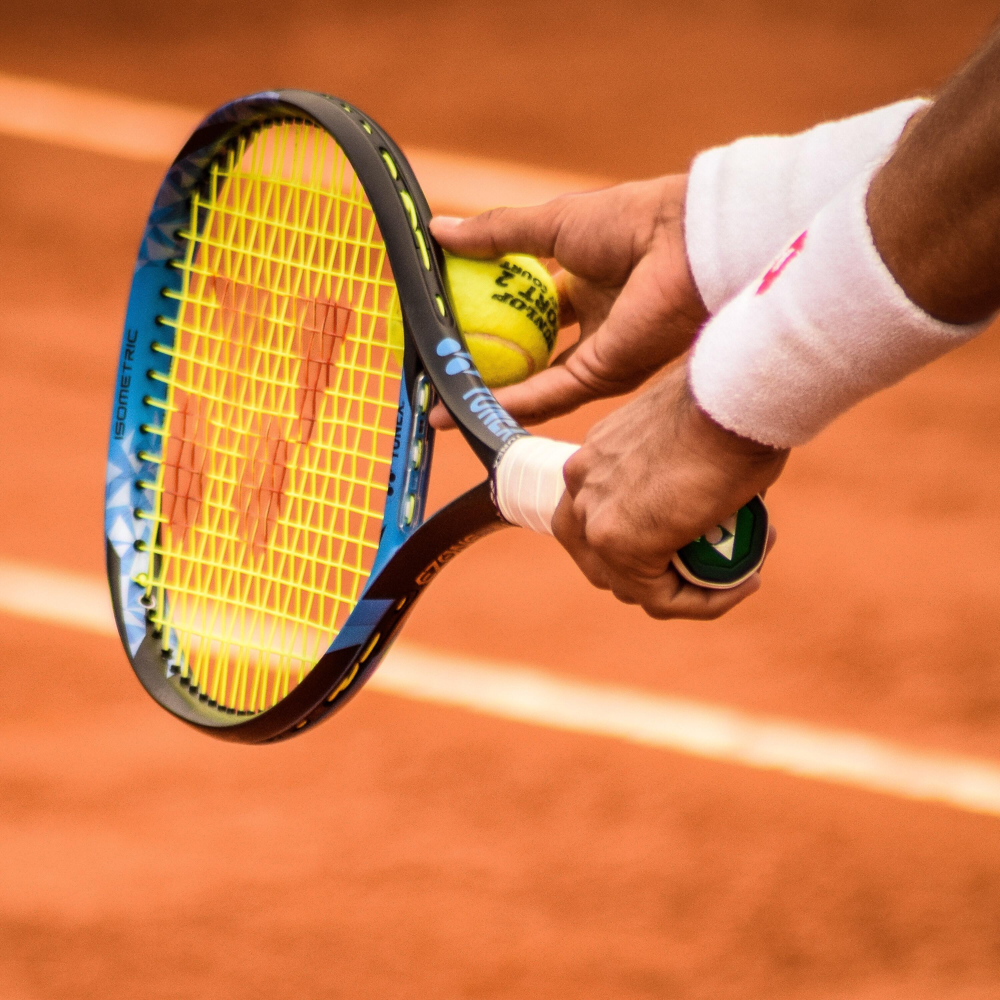

Ça c'est moi,
Pierre Hochard
Un futur ingénieur mécatronicien diplômé de l’INSA Strasbourg actuellement à la recherche d’un premier emploi. Curieux de découvrir les nouvelles technologies qui nous entourent, je suis tout particulièrement intéressé par la R&D, la mécanique, la robotique, l’automatique, et les systèmes mécatroniques. Investi dans mon travail à 100 % et faisant preuve d'une grande organisation, j’espère avoir un jour la chance d’intégrer une équipe dynamique et ambitieuse.


 
